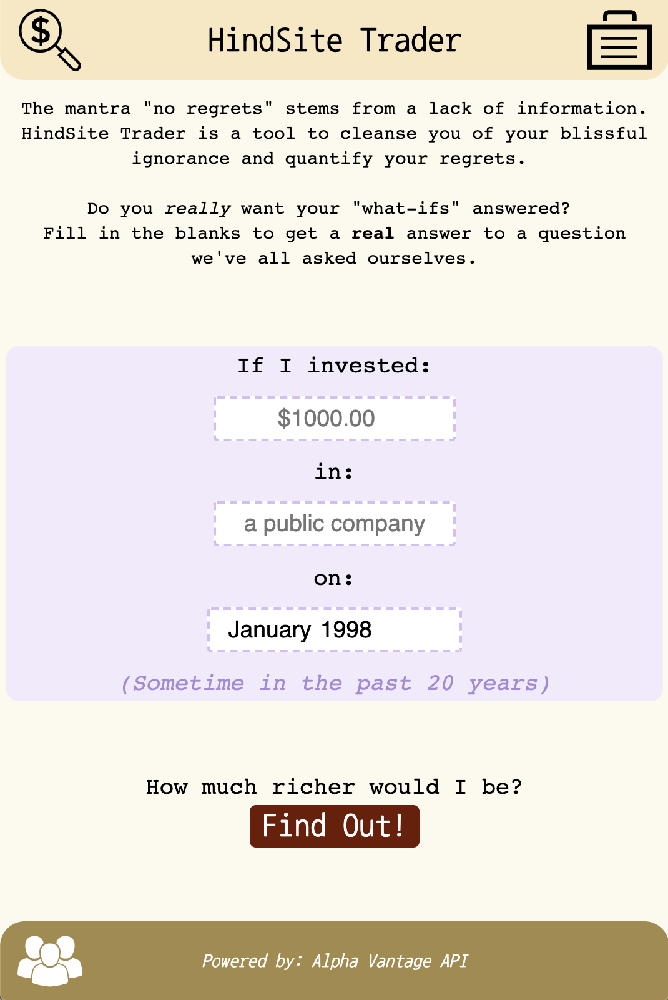

HindSite Trader
HindSite Trader is a website that lets you look back in time and see what your investment would be worth if you had invested in any publicly traded company in the U.S. at a given point in time. You can also save your searches and come back to them later to cry over your poor investment choices.
This project uses the following:
- Languages: JavaScript, SQL
- Libraries and frameworks: Node.js, Express, jQuery, Chart.js, Moment.js
- Database: PostgreSQL
- Deployment platform: Heroku
- 3rd-Party APIs: Alpha Vantage
See it deployed at hindsite.trade.
